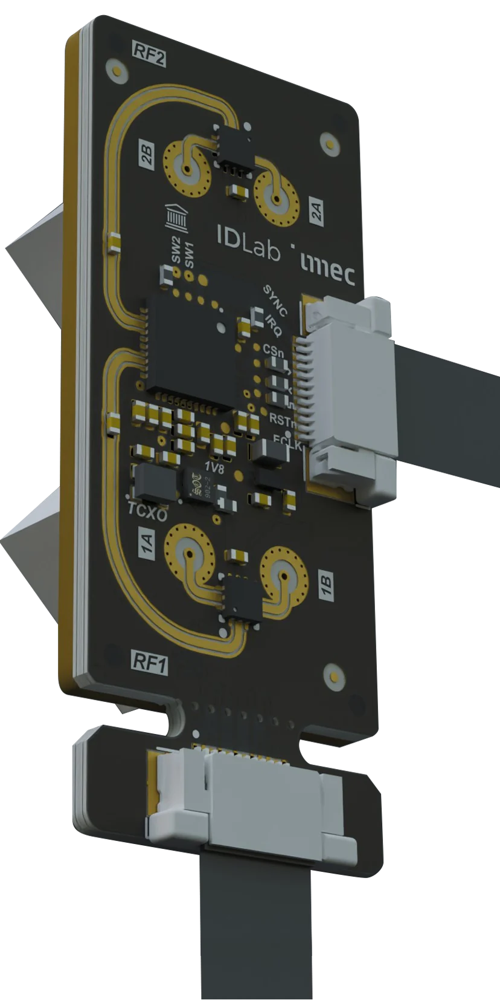
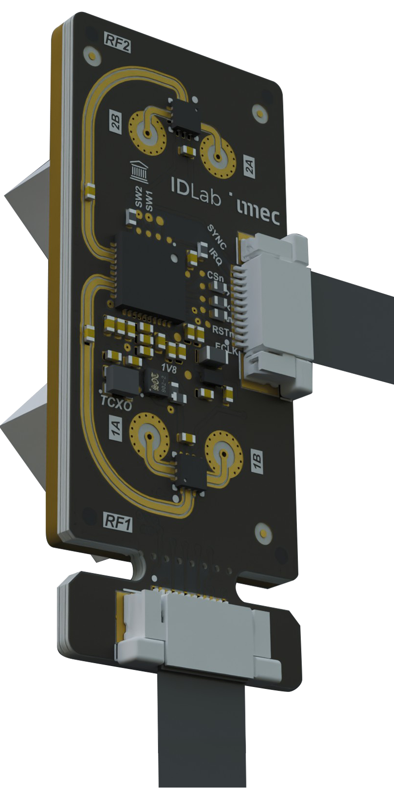
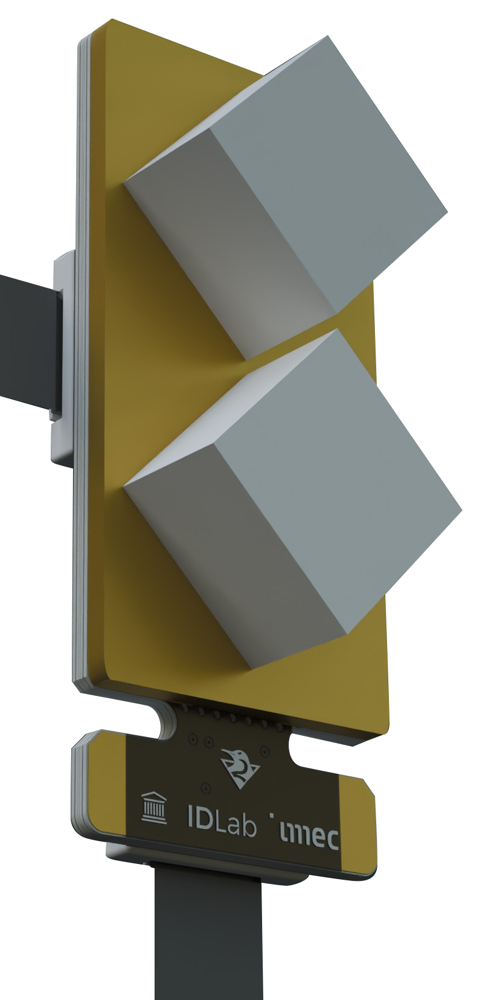

Tileable UWB Module
Localization · Sensing · Communication
A modular 1×2 UWB board for localization, sensing and communication — cascade several to add dimensions, radar modes, range or coverage.
Ask about this ↗I design and build Ultra-Wideband hardware — antennas, RF front-ends, and the embedded systems around them — for applications where a device needs to talk, locate itself, and sense its surroundings at the same time.


My core expertise: antenna and RF front-end design for anything that needs to travel over the air, from UWB to wireless connectivity more broadly — simulation through to over-the-air measurement.
From a rough idea to a working architecture — the same process behind my own modules and the tile-based UWB hardware from my PhD, now deployed in the field by Belgium-based companies.
Clean, reviewable schematics and RF-aware layouts — controlled impedance, antenna matching, and a design that's genuinely ready for manufacturing.
Bring-up and validation on the bench — the patient work that turns a first article into something you can trust in volume.
Driver and firmware bring-up around UWB radios and sensor front-ends, from first boot to a stable release.
Enclosure-aware design that keeps antenna performance and link budget intact — so the plastic around your board doesn't undo the RF work inside it.
Every board I hand over, I've soldered, flashed and measured myself — not just simulated.
PhD-level antenna and RF work, applied to problems that actually need to ship on a schedule.
Initial prototypes and short runs are the sweet spot — scope stays honest, whatever the size.

A modular 1×2 UWB board for localization, sensing and communication — cascade several to add dimensions, radar modes, range or coverage.
Ask about this ↗A compact sensor node that reports straight into Home Assistant. Battery or USB powered, no cloud required.
Ask about this ↗Local button control plus Home Assistant integration, so it still works when the network doesn't.
Ask about this ↗Have something specific in mind? I take on custom module design too.
Start a projectI'm Ruben Wilssens, a PhD researcher at IDLab (Ghent University / imec), where I work on the antenna and embedded hardware side of scalable, multi-antenna Ultra-Wideband (UWB) systems. My research centers on Joint Communication and Sensing (JCAS/ISAC) — using the same radio to communicate, locate, and sense, and closing the gap between theory and something that actually works on the bench.
Outside the lab I like applying that same hands-on approach to smaller, practical problems: helping people take an idea from a rough sketch to working hardware — schematic capture, PCB layout, and small-batch product design. A few of those projects are in my works above.
Send a short note about what you're building — I reply to every message myself.
Connect on LinkedIn ↗